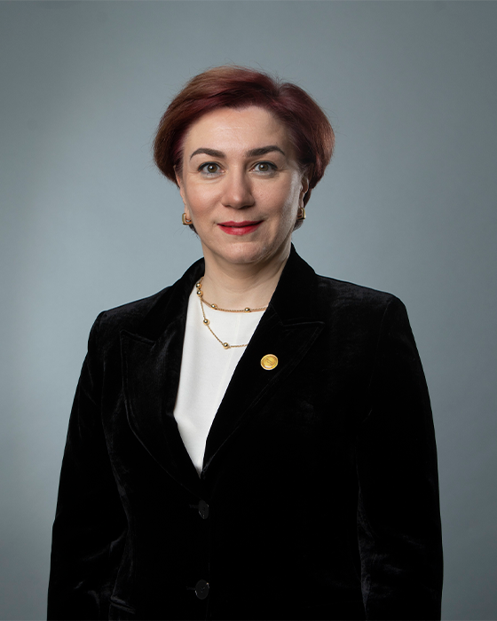

ნინო ღულათავა
ნინო ღულათავა მეგალაბის გუნდს 2021 წელს შემოუერთდა სამედიცინო დირექტორის პოზიციაზე. ასევე გახლავთ CT-MED-GLOBAL-ის დირექტორი, კონსულტანტი ბავშვთა ინფექციურ საავადმყოფოში, ლექტორი კავკასიის საერთაშორისო უნივერსიტეტში და LuxMed LTD-ის სამეთვალყურეო საბჭოს წევრი. ამასთანავე, მას გავლილი აქვს არაერთი საერთაშორისო თუ ადგილობრივი ტრენინგი. ნინოს სამუშაო გამოცდილება 28 წელს ითვლის და უკავშირდება ისეთ დაწესებულებებს, როგორებიცაა: თბილისის სახელმწიფო უნივერსიტეტი, ციტო, ოთარ ღუდუშაურის სახელობის სამედიცინო ცენტრი, მედიქალ ჰაუსი და ნიუ ჰოსპიტალსი. მას დასრულებული აქვს ლენინგრადის პედიატრიული სამედიცინო უნივერსიტეტი პედიატრიის მიმართულებით, კავკასიის უნივერსიტეტის მაგისტრატურა ჯანდაცვის მენეჯმენტის მიმართულებით და დოქტორანტურა დავით ტვილდიანის სამედიცინო უნივერსიტეტში.